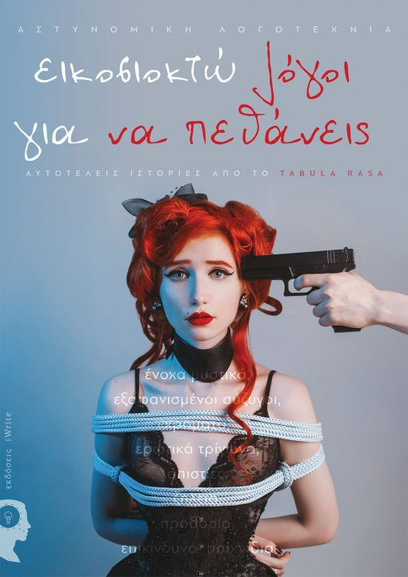
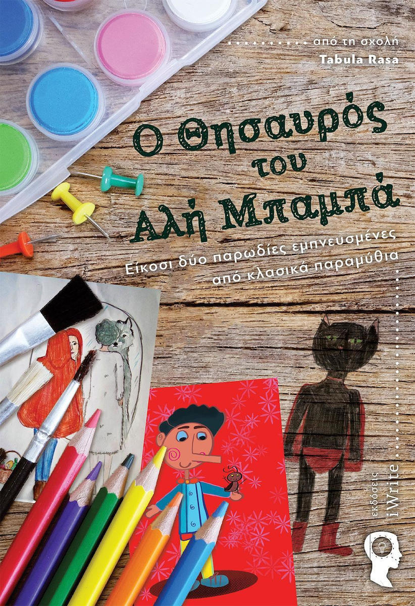
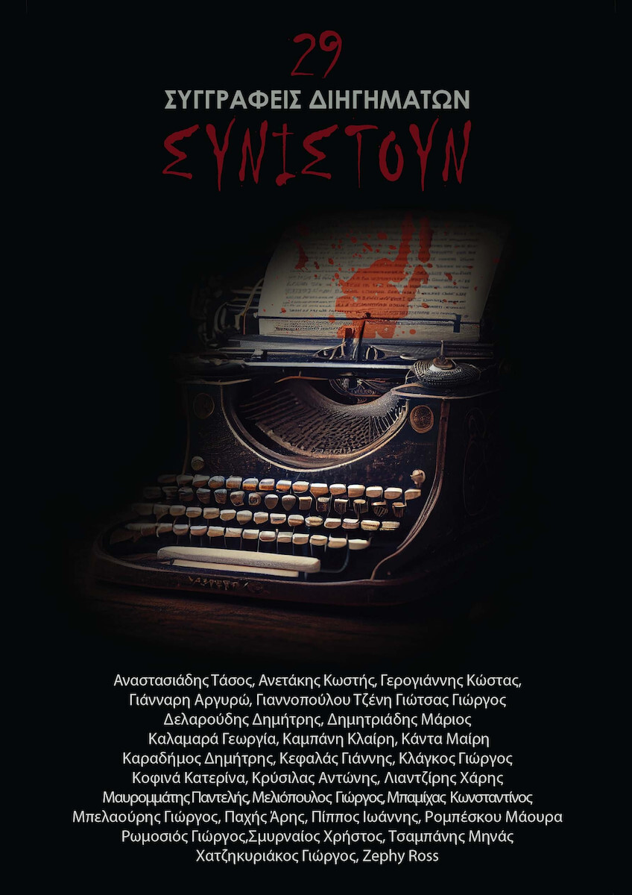
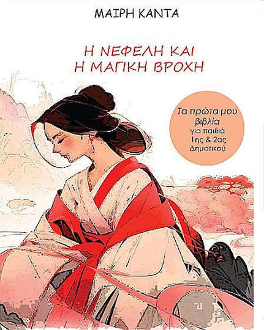

Το 2015 συμμετείχα στο συλλογικό e-book «Ψηφίδες Λόγου» με ένα διήγημά μου, ενώ το 2016 κέρδισα το τρίτο βραβείο λογοτεχνίας σε διαγωνισμό συγγραφής.
Το 2017 εκδόθηκε το συλλογικό έργο «Διαδρομές Ψυχής» (εκδόσεις Γράφημα), στο οποίο συμμετείχα με το κείμενό μου «Μία αλήθεια που πονάει».
Το 2018 κέρδισα ξανά το τρίτο βραβείο λογοτεχνίας σε διαγωνισμό συγγραφής.

Τον Μάιο του 2019 κυκλοφόρησε το συλλογικό βιβλίο «28 λόγοι για να πεθάνεις» (εκδόσεις i-write), στο οποίο συμμετείχα με το αστυνομικό διήγημα «Φόνος στον Οίκο του Θεού».
Το 2019 βραβεύτηκα στον «1ο Πανελλήνιο Διαγωνισμό Πεζογραφίας Κέφαλος».

Τον Δεκέμβριο του 2019 κυκλοφόρησε το συλλογικό βιβλίο παραμυθιών «Ο θησαυρός του Αλή Μπαμπά» (εκδόσεις i-write), στο οποίο συμμετέχω με το παραμύθι «Μία ασυνήθιστη πριγκίπισσα».
Το 2021 έλαβα τον 5ο έπαινο για το θεατρικό έργο «Πτυχία σε απόγνωση» στον «2ο Πανελλήνιο Διαγωνισμό Πεζογραφίας Κέφαλος», ενώ το 2023 κέρδισα το Α' Βραβείο Παραμυθιού στον «3ο Πανελλήνιο Διαγωνισμό Πεζογραφίας Κέφαλος».

Συμμετέχω στο συλλογικό βιβλίο τρόμου «29 συγγραφείς διηγημάτων τρόμου συνιστούν» (εκδόσεις Anima).

Τον Ιούνιο του 2024 εκδόθηκε το πρώτο ατομικό βιβλίο παραμυθιών με τίτλο «Η Νεφέλη και η μαγική Βροχή» (εκδόσεις Anima).

Τον Νοέμβριο του 2024 εκδόθηκε το βιβλίο παραμυθιών «Χριστουγεννιάτικες Ιστορίες».